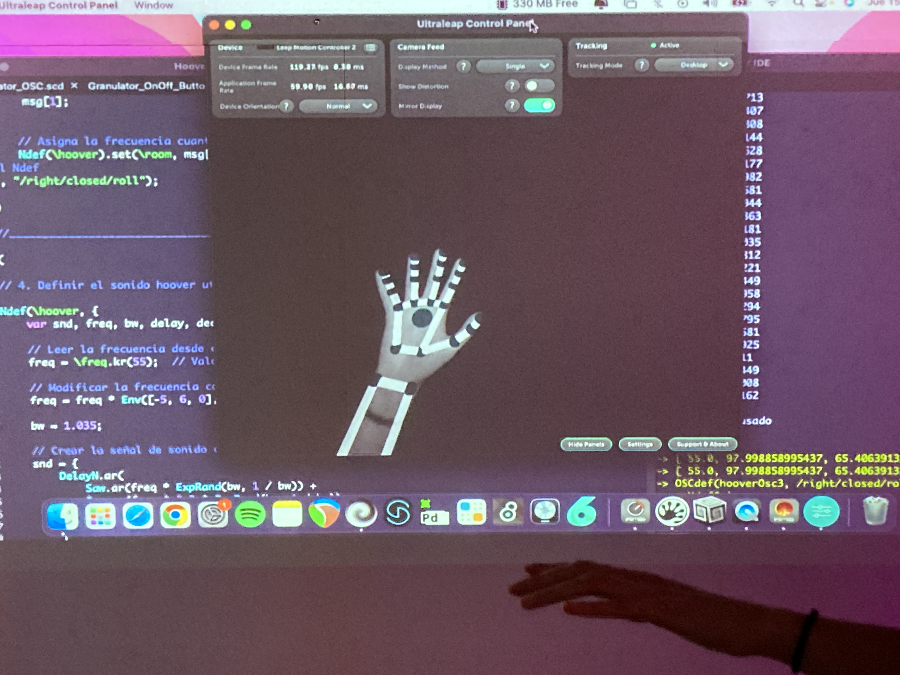
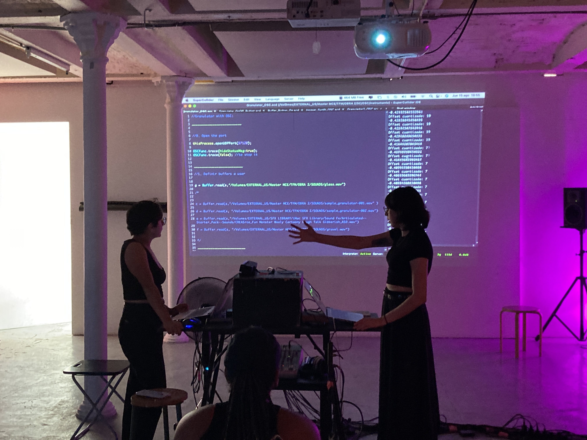
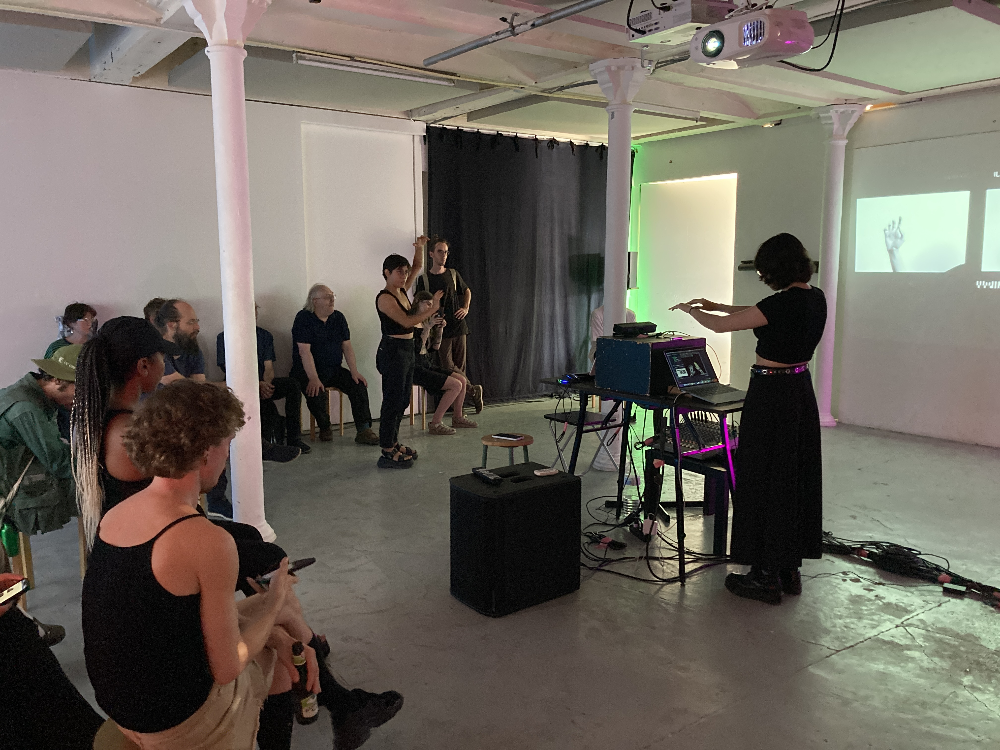
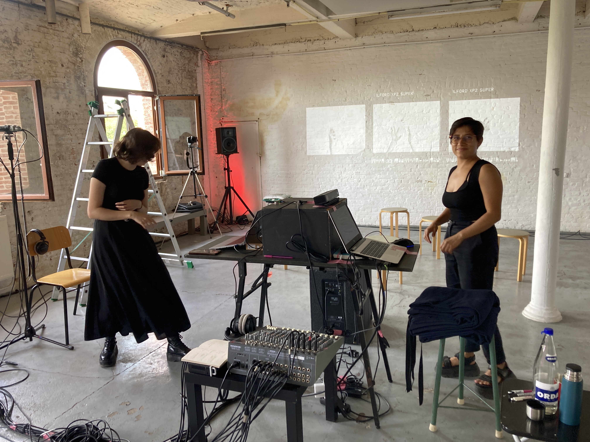
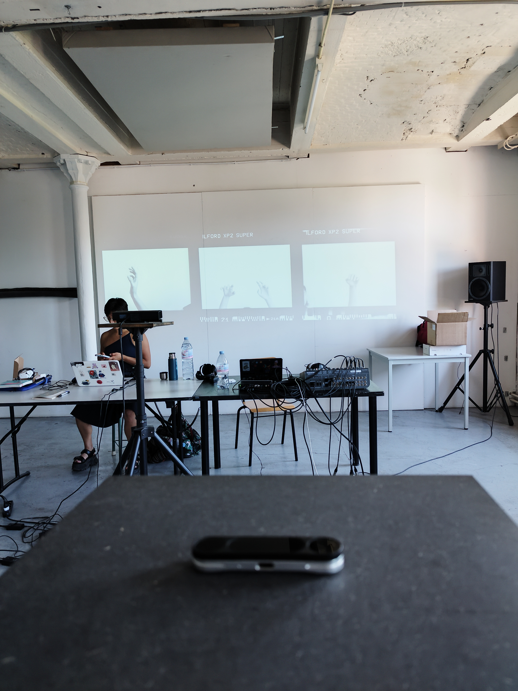

Liminal Gesture is an interactive electroacoustic sound installation that investigates expanded listening through bodily gesture, movement, and real-time sonic interaction. Developed as both an artistic work and a research project, the installation explores how gesture can function simultaneously as a sonic action, a listening technology, and a performative interface between body and sound.
The work combines motion tracking technologies, real-time synthesis, spatial audio, and gestural mapping to create an immersive environment in which participants generate and transform sound through physical movement. The installation was developed using Kinect 2, Leap Motion 2, SuperCollider, OSC communication protocols, GECO, and TouchDesigner, integrating gesture recognition, live sound synthesis, and responsive audiovisual interaction within a quadraphonic spatial audio system.
A central aspect of the project is the contrast between two gestural paradigms: macro gestures and micro gestures. Kinect captures large-scale bodily movement — posture, displacement, and expansive physical actions — while Leap Motion focuses on highly detailed hand and finger interaction. These contrasting modes of interaction were used to investigate how different scales of bodily movement influence listening, sound perception, and musical control.
The sound design and compositional system were developed simultaneously with the gestural interaction architecture, establishing a bidirectional relationship between sound behavior and movement design. For macro bodily gestures, the project employed low-frequency and physically "heavy" sonic materials, including processed cello recordings and field recordings transformed through granular synthesis. In contrast, the Leap Motion interaction system focused on highly reactive microgestures controlling detailed high-frequency textures generated through noise synthesis, resonant filter banks, impulses, and granular processing of metallic, plastic, and glass recordings.
Using OSC-based communication pipelines, gestural data was mapped in real time to granular synthesis parameters such as grain density, duration, playback rate, spatialization, and spectral behavior. The system was designed around continuous modulation and non-linear interaction rather than discrete triggering, allowing sound to evolve dynamically through movement. In SuperCollider, custom instruments, granular engines, sequencers, and synthesized systems were built specifically for the installation, alongside live coding structures and generative pattern systems used during performance.
The installation also explored the idea of sensors as musical instruments rather than purely reactive interfaces. Participants and performers were required to develop bodily precision, coordination, and active listening practices in order to interact effectively with the system. This process revealed parallels between learning traditional instruments and learning gestural digital systems, emphasizing calibration, physical endurance, embodied control, and performative awareness.
Spatialization played a key compositional role within the work. The installation used a quadraphonic sound system divided between the two gestural paradigms, spatially separating Kinect and Leap Motion sound worlds while allowing interaction and dialogue between them. Visual stop-motion projections guided participants through specific movement vocabularies and gestural possibilities, reinforcing the relationship between movement, perception, and sonic transformation.
Conceptually, Liminal Gesture investigates expanded listening as a multisensory and embodied experience that transcends purely auditory perception. Through the interaction between body, gesture, technology, and sound, the work proposes an alternative understanding of listening in which movement itself becomes part of the sonic and compositional process.




